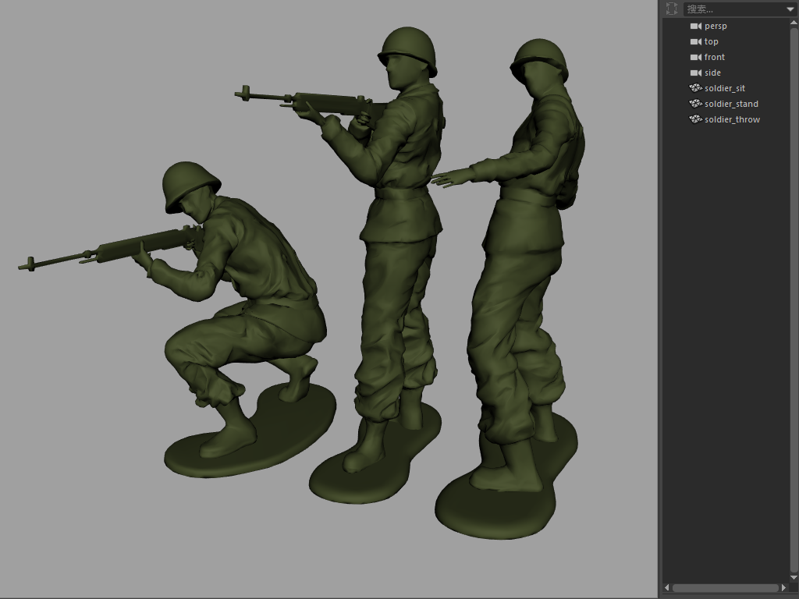
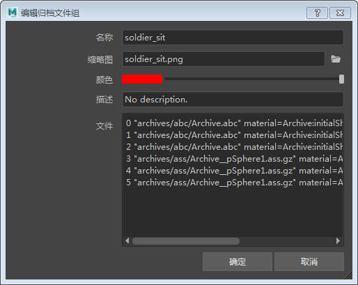
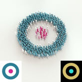

创建玩具士兵部队
在本教程中，您将重温童年时代与玩具士兵玩耍时的欢乐时光。但与童年时代不同的是，您将使用 XGen 以表达式和纹理贴图作为遮罩将士兵排成有趣的队形。我们还将介绍使用表达式和纹理贴图为单个士兵添加颜色的方法。为了获取一些现实生活的灵感，您还可以了解艺术家 1 和艺术家 2 的一些作品。两位艺术家都使用玩具士兵和其他素材创作有趣的艺术作品。
本教程分为以下章节：
要下载玩具士兵模型，请单击此处。
最后记得要与朋友们分享玩具士兵，不要将好玩的东西据为己有哦。
创建归档文件
- 首先，在 Maya 中打开玩具士兵文件。我们需要先将单个士兵模型转化为 XGen 归档，以便可以在 XGen 中使用它们。

- 分别选择每个士兵，然后转到“生成 > 将当前选择项导出为归档...”(Generate > Export Selection as Archive(s)...)。选择一个归档名称和目标文件夹，然后选择“导出”(Export)。
创建 XGen 描述
- 创建一个多边形平面，并将其缩放到要用士兵填充的大小。将多边形平面的“高度”(Height) 和“宽度”(Width) 细分数至少增大到 5。
XGen 归档基本体的数量与多边形平面的细分数量有关。如果您发现士兵未填满整个平面，则需要为多边形平面添加更多细分。
 |
只有 1 个细分的多边形平面。士兵未填满平面
 |
具有 5 个细分的多边形平面。士兵填满整个平面
- 选择多边形平面后，转到“生成 > 创建 XGen 描述”(Generate > Create XGen Description)。选择“自定义几何体/归档文件(用于已创建的任何模型)”(Custom Geometry/Archives (use for any model you have created))。
- 建议先降低“预览/输出”(Preview/Output)选项卡中的“百分比”(Percent)值，然后再继续操作。如果“百分比”(Percent)的值过高，您可能会发现计算机会因生成大量的基本体而停止运行。
- 在“归档文件”(Archive Files)下，选择“添加”(Add)，然后转到之前保存士兵归档的位置。
- 我们可以更改每个士兵的图标颜色，甚至可以添加图像图标来表示每个归档。要执行此操作，请右键单击一个归档文件的红色方块，然后选择“编辑”(Edit)。

- 单击缩略图文件夹图标，然后选择一个位图表示每个士兵。在下面的示例中，可以看到我们对每个士兵的 Maya 视口进行了截屏，并将这些图像保存为文件。我们还可以更改图标的颜色，以及调整上面的滑块来增大图标大小：
密度(Density)
- 将“密度”(Density)增加至 500 左右。这将增加多边形平面上的士兵基本体的数量。
| 500 | 1000 |
放置士兵
生成器属性
“生成基本体”(Generate Primitives)设置为“以统一的行和列”(In uniform rows and columns)时，“间距”(Spacing)属性将替换“密度”(Density)。增大“间距”(Spacing)属性会增加基本体之间的距离。
| 生成基本体(Generate Primitives)：随机横跨曲面(Randomly across the surface) | 生成基本体(Generate Primitives)：以统一的行和列(In uniform rows and columns) |
使用表达式为士兵指定随机颜色
有关如何执行此操作的详细信息，请参见为基本体指定随机颜色教程。
- 创建一个 Ai 用户数据颜色节点，并将其连接到指定给士兵 XGen 描述的 standard_surface 着色器的“颜色”(Color)属性。
userdata_color -> standard_surface.color
- 在 Ai 用户数据颜色节点的“颜色属性名称”(Color Attr Name)中键入 color。我们将在 XGen 描述中使用相同的“颜色”(Color)名称。
将名称“color”添加到 Ai 用户数据颜色节点中的“颜色属性名称”(Color Attr Name)
- MtoA 不会对 Ai 用户数据颜色节点进行 Gamma 校正。因此，您需要在 Ai 用户数据颜色 节点与标准曲面着色器的“颜色”(Color) 属性 之间添加一个 *Maya Gamma 校正* 节点，如下所示。将“Gamma RGB”的值更改为 0.454。

渲染场景。士兵是黑色的，因为 Ai 用户数据颜色的“默认值”(Default Value)为黑色。我们需要使用 XGen 中的“自定义着色器参数”(Custom Shader Parameters)将其连接到 XGen 描述。
单击 XGen 中的“预览/输出”(Priview/Output)选项卡，并打开“输出设置”(Output Settings)。您应该会在下方看到“自定义着色器参数”(Custom Shader Parameters)。我们将在这里添加表达式。
自定义着色器参数(Custom Shader Parameters)（底部）
- 在“名称”(Name)文本字段中，键入用于 Ai 用户数据颜色节点的“颜色属性名称”(Color Attr Name)的相同名称。在本例中，我们使用单词“Color”。单击“浮点”(float)并将其更改为“颜色”(Color)，因为这是我们想要更改的属性。

“自定义着色器参数”(Custom Shader Parameters)设置为“颜色”(Color)
- 单击新的“color color”参数右侧的“XGen 表达式编辑器”(XGen Expression Editor)图标
 ，然后在“XGen 表达式编辑器”(XGen Expression Editor)中添加以下文本：
，然后在“XGen 表达式编辑器”(XGen Expression Editor)中添加以下文本：
$factor = 0.1920;
$a=[rand( 0.3, 0.65 ,$id)*$factor,rand( 0.4, 0.45 ,$id+1)*$factor,rand( 0.25, 0.55 ,$id+2)*$factor];#-1.0,1.0
$a
自定义颜色的“XGen 表达式编辑器”(XGen Expression Editor)
- 渲染场景。此时您应该会看到程序将根据上面使用的随机值随机创建士兵的颜色。

使用遮罩
使用表达式作为遮罩
我们还可以使用表达式来定义每个多边形面上显示的士兵数量。
- 单击遮罩滑块控件右侧的表达式图标
 ，然后在“XGen 表达式编辑器”(XGen Expression Editor)中键入以下文本：
，然后在“XGen 表达式编辑器”(XGen Expression Editor)中键入以下文本：
$border = 0.1150; $u > $border && $u < (1-$border) && $v > $border && $v < (1-$border) 对于每个面，可以使用 $u 和 $v 获取 UV 坐标。使用此表达式，仅填充 U 大于 0.2 且小于 0.8，V 大于 0.2 且小于 0.8 的位置。这样，我们将在多边形平面每个面的中间获得一个方形。
| $border = 0.1000 | $border = 0.2000 |
使用纹理贴图作为遮罩
我们还可以使用黑白栅格纹理编排我们这支军队的队形。
- 单击“遮罩”(Mask)右侧的向下箭头 。选择“创建贴图...”(Create Map...)（请务必注意，仅当平面指定有 Maya 着色器时，该选项才有效）。
- “贴图名称”(Map Name)应为“mask”。将“贴图分辨率”(Map Resolution)增加到 200 左右。这将按每个面的 Texel 数设置 PTEX 贴图的分辨率。使用高分辨率纹理时，请使用更大的“贴图分辨率”(Map Resolution)值。完成后，单击“创建”(Create)。

| 栅格纹理贴图用作密度遮罩 | 棋盘格纹理贴图用作密度遮罩 |
下面的示例显示了另一个使用颜色纹理驱动密度遮罩的示例。
 |
|
| 圆形贴图用于颜色和密度（放置基本体：“随机横跨曲面”(Randomly across the surface)） | 圆形贴图仅用于颜色（放置基本体：“以统一的行和列”(In uniform rows and columns)） |
- 如果我们反转用于遮罩的贴图，可以在用于颜色贴图的白色区域获得透明效果。
用于遮罩的贴图将发生反转，因此士兵不会显示在黑色区域。

工作流问题 - 基本体边界
在下面的渲染中，可以看到右上角出现一些“剪裁”。这是因为边界框区域设置得过低，而程序不会在此区域外部渲染士兵。增大“基本体边界”(Primitive Bound)可以解决此问题。此选项位于“预览/输出”(Preview/Output)选项卡下的“输出设置”(Output Settings)中。

为基本体边界设置的值对于 XGen 归档基本体来说尚不够大
总结
有关如何在 XGen 中创建遮罩以及为基本体归档玩具士兵模型上色的教程到此结束。希望本教程能给您带来乐趣。但是，现在该把玩具士兵收起来啦，快去整理房间！
感谢 Pedro Fernando Gómez 在 XGen 方面提供的帮助。